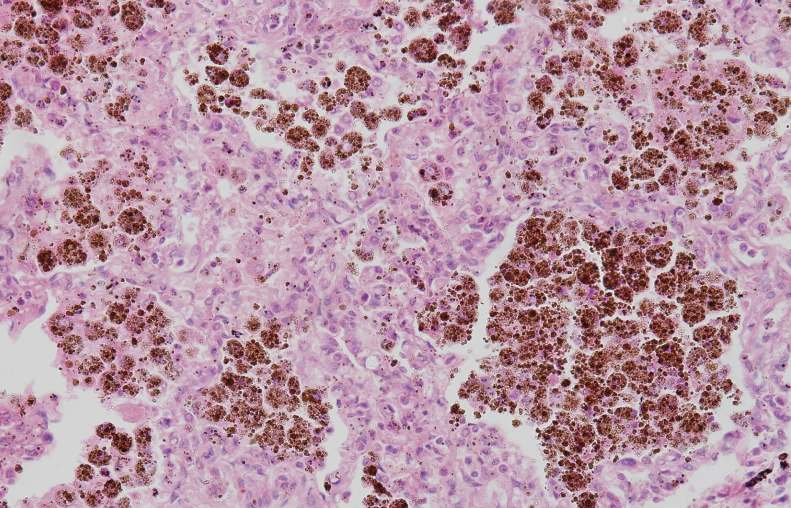
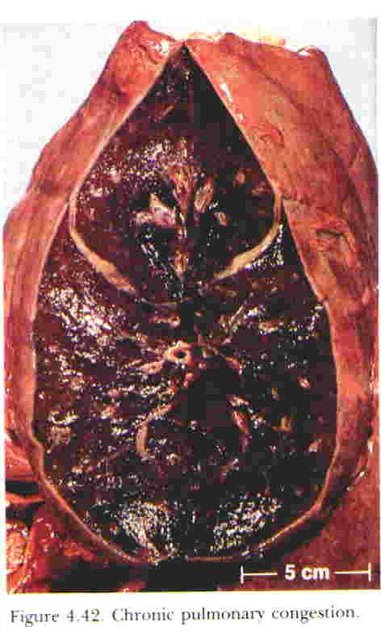
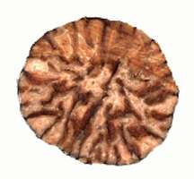

The pulmonary circulation drains into the left atrium. Anything that raises left atrial pressure — failing left ventricle, mitral stenosis, mitral regurgitation — is transmitted backwards into the pulmonary veins and capillaries. Pulmonary congestion is therefore the signature lesion of left-sided heart disease.گردش خون ریوی به دهلیز چپ تخلیه میشود. هر چیزی که فشار دهلیز چپ را بالا ببرد — بطن چپ نارسا، تنگی میترال، نارسایی میترال — بهصورت پسرونده به وریدها و مویرگهای ریوی منتقل میگردد. بنابراین احتقان ریوی، ضایعهٔ شاخص بیماری قلب چپ است.
Acute pulmonary congestionاحتقان حاد ریه
Fig 1.4 Acutely congested lungs: heavy, dark red-purple, dripping frothy blood-tinged fluid from the cut surface.ریههای محتقن حاد: سنگین، قرمز–بنفش تیره، با تراوش مایع کفآلود خونی از سطح برش.Fig 1.5 Histology: alveolar septal capillaries are dilated and engorged with red cells; pale protein-poor edema fluid fills some alveoli; scattered red cells have escaped into the airspaces.هیستولوژی: مویرگهای سپتوم آلوئولی متسع و پر از گلبول قرمزند؛ مایع ادم کمپروتئین و کمرنگ برخی آلوئولها را پر کرده و گلبولهای قرمز پراکنده وارد فضای هوایی شدهاند.
Gross: heavy, wet, dark red-purple lungs. The cut surface oozes frothy, blood-tinged fluid — frothy because edema fluid is being whipped with air in the airways.ماکروسکوپی: ریههای سنگین، مرطوب و قرمز–بنفش تیره. سطح برش مایع کفآلود خونی تراوش میکند؛ کفآلود به این دلیل که مایع ادم در راههای هوایی با هوا مخلوط و زده شده است.
Microscopic — three findings: (i) alveolar septal capillaries are dilated and packed with red cells; (ii) protein-poor edema fluid (transudate) fills alveolar spaces, staining pale pink and homogeneous; (iii) scattered red cells lie free within alveoli where capillaries have leaked or ruptured.میکروسکوپی — سه یافته: (۱) مویرگهای سپتوم آلوئولی متسع و مملو از گلبول قرمزند؛ (۲) مایع ادم کمپروتئین (ترانسودا) فضاهای آلوئولی را پر کرده و بهصورت صورتی کمرنگ و یکنواخت رنگ میگیرد؛ (۳) گلبولهای قرمز پراکنده آزادانه در آلوئولها دیده میشوند، جایی که مویرگها نشت کرده یا پاره شدهاند.
Chronic pulmonary congestion and the heart failure cellاحتقان مزمن ریه و سلول نارسایی قلبی

Fig 1.6 Chronic pulmonary congestion. Alveolar septa are thickened and fibrotic; alveolar spaces contain haemosiderin-laden macrophages — the heart failure cells — recognisable as large cells stuffed with coarse golden-brown granules.احتقان مزمن ریه. سپتومهای آلوئولی ضخیم و فیبروتیک شدهاند؛ فضاهای آلوئولی حاوی ماکروفاژهای پر از هموسیدرین — همان سلولهای نارسایی قلبی — هستند که بهصورت سلولهای درشتِ انباشته از دانههای درشت قهوهای–طلایی دیده میشوند.
When left heart failure persists for months, the lung changes from a passively wet organ into a structurally remodelled one. The classical name is brown induration of the lung: brown from haemosiderin, induration (hardening) from fibrosis.وقتی نارسایی قلب چپ ماهها ادامه یابد، ریه از یک عضو صرفاً خیس به عضوی با بازآرایی ساختاری تبدیل میشود. نام کلاسیک آن سفتشدگی قهوهای ریه است: قهوهای از هموسیدرین و سفتی از فیبروز.
Mechanism — how a failing left ventricle produces heart failure cellsمکانیسم — چگونه بطن چپ نارسا سلولهای نارسایی قلبی میسازد
The left ventricle fails, so it cannot eject its full end-diastolic volume. Residual volume accumulates and left ventricular end-diastolic pressure rises.A weakened pump ejects a smaller fraction of what it receives; what is not ejected stays behind and raises filling pressure.بطن چپ نارسا میشود و نمیتواند تمام حجم پایاندیاستولی خود را بیرون براند. حجم باقیمانده انباشته میشود و فشار پایاندیاستولی بطن چپ بالا میرود.پمپ ضعیف کسر کمتری از آنچه دریافت میکند بیرون میراند؛ آنچه خارج نشود باقی میماند و فشار پرشدن را بالا میبرد.
That pressure is transmitted backwards: left ventricle → left atrium → pulmonary veins → pulmonary capillaries.During diastole the mitral valve is open, so the ventricle, atrium and pulmonary veins form one continuous column of fluid; pressure equilibrates along it.این فشار به عقب منتقل میشود: بطن چپ ← دهلیز چپ ← وریدهای ریوی ← مویرگهای ریوی.در دیاستول دریچهٔ میترال باز است، پس بطن، دهلیز و وریدهای ریوی یک ستون پیوستهٔ مایع میسازند و فشار در طول آن یکسان میشود.
Pulmonary capillary hydrostatic pressure rises above the plasma oncotic pressure, and fluid is forced into the alveolar septa and then into the airspaces.Net filtration = (hydrostatic gradient) − (oncotic gradient). Once hydrostatic pressure exceeds ~25 mmHg, the oncotic pull of albumin can no longer hold the fluid in.فشار هیدروستاتیک مویرگ ریوی از فشار انکوتیک پلاسما بالاتر میرود و مایع به سپتوم آلوئولی و سپس به فضای هوایی رانده میشود.فیلتراسیون خالص = گرادیان هیدروستاتیک منهای گرادیان انکوتیک. وقتی فشار هیدروستاتیک از حدود ۲۵ میلیمتر جیوه بگذرد، کشش انکوتیک آلبومین دیگر نمیتواند مایع را نگه دارد.
The same pressure over-distends thin-walled septal capillaries until small numbers of them rupture, releasing red blood cells into the alveolar space.An alveolar capillary wall is ~0.5 µm thick — built for gas exchange, not for pressure. Chronic over-distension causes microscopic breaks.همین فشار، مویرگهای نازکدیوارهٔ سپتوم را چنان متسع میکند که تعدادی از آنها پاره شده و گلبولهای قرمز وارد فضای آلوئولی میشوند.دیوارهٔ مویرگ آلوئولی حدود نیم میکرومتر ضخامت دارد — ساختهشده برای تبادل گاز، نه برای تحمل فشار. اتساع مزمن باعث پارگیهای میکروسکوپی میشود.
Alveolar macrophages phagocytose the extravasated red cells.Free red cells in the airspace are debris; clearing them is the resident macrophage's job.ماکروفاژهای آلوئولی گلبولهای قرمز خارجشده را فاگوسیت میکنند.گلبولهای آزاد در فضای هوایی زباله محسوب میشوند و پاکسازی آنها وظیفهٔ ماکروفاژ مقیم است.
Inside the phagolysosome, haemoglobin is degraded. The globin is recycled and the porphyrin ring is opened, but the iron cannot be excreted, so it is stored as ferritin aggregates that condense into haemosiderin, a coarse, golden-brown, refractile pigment.The body has no route for excreting iron in quantity; the only options are re-export or local storage. A macrophage sitting in an alveolus cannot export it efficiently, so it accumulates.درون فاگولیزوزوم، هموگلوبین تجزیه میشود. گلوبین بازیافت و حلقهٔ پورفیرین باز میگردد، اما آهن قابل دفع نیست و بهصورت تجمعات فریتین ذخیره شده که به هموسیدرین، رنگدانهای درشت، قهوهای–طلایی و شکنندهٔ نور، تبدیل میشود.بدن راهی برای دفع مقادیر زیاد آهن ندارد؛ تنها گزینهها صدور مجدد یا ذخیرهٔ موضعی است. ماکروفاژی که در آلوئول نشسته نمیتواند آن را بهخوبی صادر کند، پس آهن انباشته میشود.
These pigment-stuffed macrophages are the heart failure cells (siderophages). They accumulate in alveoli and can be coughed up in sputum.They are simply macrophages that have eaten too much blood; the name reflects the clinical context in which they are found, not a unique cell type.این ماکروفاژهای انباشته از رنگدانه همان سلولهای نارسایی قلبی (سیدروفاژها) هستند. در آلوئولها جمع میشوند و میتوانند در خلط سرفه شوند.اینها صرفاً ماکروفاژهایی هستند که خون زیادی خوردهاند؛ نامگذاری به زمینهٔ بالینی اشاره دارد، نه به نوع سلولی منحصربهفرد.
In parallel, chronic hypoxia and the mechanical stress of persistent edema stimulate septal fibroblasts to lay down collagen, and the septa thicken.Hypoxia and stretch are both profibrotic stimuli; the lung repairs recurrent low-grade injury with scar because alveolar architecture cannot be perfectly regenerated.همزمان، هیپوکسی مزمن و فشار مکانیکی ادم پایدار، فیبروبلاستهای سپتوم را به تولید کلاژن تحریک میکند و سپتومها ضخیم میشوند.هیپوکسی و کشش هر دو محرک فیبروز هستند؛ ریه آسیب خفیف و مکرر را با اسکار ترمیم میکند، چون معماری آلوئول بهطور کامل بازسازیشدنی نیست.
Brown induration of the lung — firm, brown, heavy lungs with rust-coloured spots on the cut surface; microscopically, thickened fibrotic alveolar septa plus haemosiderin-laden macrophages in the alveoli. Functionally, the thickened septum impairs gas diffusion, so the patient becomes dyspnoeic.سفتشدگی قهوهای ریه — ریههای سفت، قهوهای و سنگین با لکههای زنگاری روی سطح برش؛ در میکروسکوپ، سپتومهای آلوئولی ضخیم و فیبروتیک بهعلاوهٔ ماکروفاژهای پر از هموسیدرین در آلوئولها. از نظر عملکردی، سپتوم ضخیم انتشار گاز را مختل میکند و بیمار دچار تنگی نفس میشود.

Fig 1.7 Chronic pulmonary congestion, gross. The pleural surface and cut surface show rust-coloured spots, each a focus of old alveolar haemorrhage now converted to haemosiderin.احتقان مزمن ریه، نمای ماکروسکوپی. سطح پلور و سطح برش لکههای زنگاری نشان میدهند؛ هر لکه کانونی از خونریزی قدیمی آلوئولی است که اکنون به هموسیدرین تبدیل شده.
High-Yield — three features of chronic pulmonary congestionنکتهٔ کلیدی — سه ویژگی احتقان مزمن ریه
Thickened, fibrotic alveolar septa (the "induration").سپتوم آلوئولی ضخیم و فیبروتیک (همان «سفتشدگی»).
Haemosiderin-laden macrophages (heart failure cells) in the alveolar spaces (the "brown").ماکروفاژهای پر از هموسیدرین (سلولهای نارسایی قلبی) در فضاهای آلوئولی (همان «قهوهای»).
Dilated, congested septal capillaries with variable interstitial edema.مویرگهای متسع و محتقن سپتوم همراه با ادم بینابینی متغیر.
Grossly: firm, heavy, brown lungs with rust-coloured spots. This is the lecture's named learning objective — expect it verbatim.در نمای ماکروسکوپی: ریههای سفت، سنگین و قهوهای با لکههای زنگاری. این هدف آموزشی صریح درس است — انتظار داشته باشید عیناً پرسیده شود.
Clinical Correlationارتباط بالینی
A patient with chronic left heart failure or mitral stenosis presents with exertional dyspnoea, orthopnoea, paroxysmal nocturnal dyspnoea and a cough productive of rust-coloured or blood-tinged sputum containing heart failure cells. In long-standing mitral stenosis, the chronically raised pulmonary venous pressure is eventually transmitted to the pulmonary arteries, producing pulmonary hypertension, right ventricular hypertrophy and finally right heart failure — left-sided disease that has "crossed over" to become right-sided. Note the sequence: chronic congestion of the lung also predisposes to red infarction after a pulmonary embolus, because the compensatory bronchial supply is already inadequate (see §5.3).بیمار مبتلا به نارسایی مزمن قلب چپ یا تنگی میترال با تنگی نفس فعالیتی، ارتوپنه، تنگی نفس حملهٔ شبانه و سرفهٔ همراه با خلط زنگاری یا خونی حاوی سلولهای نارسایی قلبی مراجعه میکند. در تنگی میترال دیرپا، فشار بالای مزمن وریدهای ریوی سرانجام به شریانهای ریوی منتقل شده و پرفشاری ریوی، هیپرتروفی بطن راست و در نهایت نارسایی قلب راست ایجاد میکند — بیماری سمت چپ که «عبور کرده» و به سمت راست رسیده است. به این توالی توجه کنید: احتقان مزمن ریه همچنین زمینهساز انفارکت قرمز پس از آمبولی ریه است، چون خونرسانی جبرانی برونشیال از پیش ناکافی است (بخش ۵.۳).
1.6The Congested Liver and Nutmeg Liverکبد محتقن و کبد جوز هندی
The hepatic veins drain into the inferior vena cava and thence into the right atrium. Hepatic congestion is therefore the signature lesion of right-sided heart failure (and of any obstruction of hepatic venous outflow, such as Budd–Chiari syndrome).وریدهای کبدی به ورید اجوف تحتانی و از آنجا به دهلیز راست تخلیه میشوند. بنابراین احتقان کبدی ضایعهٔ شاخص نارسایی قلب راست است (و نیز هر انسداد در خروج وریدی کبد، مانند سندرم بود–کیاری).
The essential anatomy — why the centre dies firstآناتومی کلیدی — چرا مرکز لوبول اول میمیرد
Blood enters the liver lobule at its periphery, from the portal triads (portal venule + hepatic arteriole), flows inward along the sinusoids, and exits at the centre through the central vein. Oxygen is extracted all the way along that path. Therefore:خون از محیط لوبول کبدی و از مجرای پورتال (وریدچهٔ پورت + شریانچهٔ کبدی) وارد میشود، در طول سینوزوئیدها به سمت داخل جریان مییابد و از مرکز و از طریق ورید مرکزی خارج میگردد. اکسیژن در تمام طول این مسیر برداشت میشود. بنابراین:
Zone 1 (periportal) — highest pO2 —Zone 2—Zone 3 (centrilobular) — lowest pO2, dies first
Two facts follow, and between them they explain the whole of nutmeg liver: (i) the centrilobular (zone 3) hepatocytes are the most hypoxia-vulnerable cells in the lobule because they see blood that is already partly deoxygenated; and (ii) the central vein is the first structure to feel back-pressure from the right heart, because it is the most downstream point in the lobule.دو نتیجه از این آناتومی حاصل میشود و همین دو، تمام ماجرای کبد جوز هندی را توضیح میدهند: (۱) سلولهای کبدی مرکز لوبولی (ناحیهٔ ۳) آسیبپذیرترین سلولها در برابر هیپوکسیاند، چون خونی میبینند که از پیش تا حدی اکسیژن خود را از دست داده؛ و (۲) ورید مرکزی نخستین ساختاری است که فشار پسرونده از قلب راست را احساس میکند، چون پاییندستترین نقطهٔ لوبول است.

Fig 1.8 A bisected nutmeg (the spice) — dark radiating lines on a paler ground. The name of the lesion comes from this resemblance.جوز هندی (ادویه) در برش — خطوط تیرهٔ شعاعی بر زمینهٔ روشنتر. نام ضایعه از همین شباهت گرفته شده است.Fig 1.9 Nutmeg liver, cut surface: a fine mottled pattern of dark red foci (congested centrilobular zones) alternating with pale tan zones (viable, often fatty, periportal parenchyma).کبد جوز هندی، سطح برش: الگوی خالخال ظریف از کانونهای قرمز تیره (نواحی مرکز لوبولی محتقن) در کنار نواحی نخودی روشن (پارانشیم زنده و اغلب چرب اطراف پورتال).Fig 1.10 Fixed specimen, chronic passive hepatic congestion. The mottling is present throughout the organ, which is enlarged with a tense capsule.نمونهٔ فیکسشده، احتقان غیرفعال مزمن کبد. الگوی خالخال در سراسر عضو دیده میشود؛ کبد بزرگ شده و کپسول آن تحت کشش است.
Mechanism — how the nutmeg pattern is built, step by stepمکانیسم — چگونه الگوی جوز هندی ساخته میشود، گام به گام
The right ventricle fails (or the hepatic veins are obstructed), so systemic venous pressure rises.The right heart is the end of the systemic venous circuit; when it cannot empty, everything behind it becomes engorged.بطن راست نارسا میشود (یا وریدهای کبدی مسدود میگردند) و فشار وریدی سیستمیک بالا میرود.قلب راست انتهای مدار وریدی سیستمیک است؛ وقتی نتواند تخلیه شود، هر چه پشت آن است پرخون میگردد.
Pressure is transmitted backwards: right atrium → inferior vena cava → hepatic veins → central veins of the lobules.These form an uninterrupted low-pressure column; there is no valve between the right atrium and the hepatic sinusoids to interrupt transmission.فشار به عقب منتقل میشود: دهلیز راست ← ورید اجوف تحتانی ← وریدهای کبدی ← وریدهای مرکزی لوبولها.اینها یک ستون کمفشار بدون وقفهاند؛ هیچ دریچهای بین دهلیز راست و سینوزوئیدهای کبدی وجود ندارد که این انتقال را قطع کند.
The central veins and the sinusoids immediately around them dilate and fill with dark venous blood.They are the thinnest-walled, most distensible and most downstream vessels in the lobule, so they yield to the raised pressure first.ورید مرکزی و سینوزوئیدهای بلافاصله اطراف آن گشاد شده و از خون تیرهٔ وریدی پر میشوند.اینها نازکدیوارهترین، قابلاتساعترین و پاییندستترین عروق لوبولاند، پس اول در برابر فشار بالارفته تسلیم میشوند.
Sinusoidal flow slows to a crawl, so oxygen delivery to zone 3 falls below the level the hepatocytes need.Those cells were already at the lowest pO₂ in the lobule; any further reduction crosses their threshold for survival while zone 1 cells, bathed in fresh portal and arterial blood, are still comfortable.جریان سینوزوئیدی بسیار کند میشود و اکسیژنرسانی به ناحیهٔ ۳ به زیر نیاز سلولهای کبدی میافتد.این سلولها از پیش پایینترین فشار اکسیژن لوبول را داشتند؛ هر کاهش بیشتری آستانهٔ بقای آنها را رد میکند، در حالی که سلولهای ناحیهٔ ۱ که در خون تازهٔ پورتال و شریانی شناورند هنوز بیمشکلاند.
Centrilobular hepatocytes undergo hypoxic injury: first fatty change and atrophy, then, if the hypoxia is severe or prolonged, centrilobular haemorrhagic necrosis.Hypoxia halts oxidative phosphorylation; fatty acids can no longer be β-oxidised and accumulate as fat, and ATP depletion eventually causes irreversible membrane failure and cell death. The necrotic zone is haemorrhagic because it is simultaneously full of pooled blood.سلولهای کبدی مرکز لوبولی دچار آسیب هیپوکسیک میشوند: ابتدا تغییر چربی و آتروفی، و سپس در صورت شدت یا تداوم هیپوکسی، نکروز هموراژیک مرکز لوبولی.هیپوکسی فسفوریلاسیون اکسیداتیو را متوقف میکند؛ اسیدهای چرب دیگر بتااکسید نمیشوند و بهصورت چربی انباشته میگردند، و کاهش ATP سرانجام به نارسایی برگشتناپذیر غشا و مرگ سلول میانجامد. ناحیهٔ نکروتیک هموراژیک است، چون همزمان پر از خون جمعشده است.
Meanwhile the periportal (zone 1) hepatocytes survive, because they receive blood first. They commonly develop fatty change from milder hypoxia and from the chronic illness itself, which turns them yellow-tan.Fatty change is the reversible, "lesser" hypoxic injury; it stops short of necrosis and gives the surviving tissue a pale yellow colour that contrasts sharply with the dark centre.در همین حال سلولهای اطراف پورتال (ناحیهٔ ۱) زنده میمانند، چون خون را اول دریافت میکنند. این سلولها معمولاً بهدلیل هیپوکسی خفیفتر و خودِ بیماری مزمن دچار تغییر چربی میشوند و رنگ زرد–نخودی میگیرند.تغییر چربی، آسیب هیپوکسیک برگشتپذیر و «خفیفتر» است؛ به نکروز نمیرسد و به بافت زنده رنگ زرد کمرنگی میدهد که با مرکز تیره تضاد شدیدی دارد.
The cut surface therefore shows dark red centrilobular foci set in a pale yellow-tan periportal background, repeated in every lobule across the whole organ.The lobule is a repeating unit, so a lesion that targets one zone of the lobule produces a regular, uniform mottling of the entire cut surface rather than a patchy lesion.بنابراین سطح برش کانونهای قرمز تیرهٔ مرکز لوبولی را بر زمینهٔ زرد–نخودی اطراف پورتال نشان میدهد که در هر لوبول و در سراسر عضو تکرار میشود.لوبول یک واحد تکرارشونده است، پس ضایعهای که یک ناحیهٔ خاص لوبول را هدف بگیرد، بهجای ضایعهٔ لکهای، خالخال منظم و یکنواختی در تمام سطح برش ایجاد میکند.
A cut surface that looks like a bisected nutmeg. The dark red = congested, necrotic centrilobular zones. The pale tan = surviving, often fatty, periportal parenchyma. If congestion persists for years, collagen is laid down around the central veins — cardiac sclerosis, sometimes progressing to true cardiac cirrhosis.سطح برشی که شبیه جوز هندی برشخورده است. قرمز تیره = نواحی مرکز لوبولی محتقن و نکروتیک. نخودی روشن = پارانشیم زندهٔ اطراف پورتال که اغلب چرب است. اگر احتقان سالها ادامه یابد، کلاژن اطراف وریدهای مرکزی رسوب میکند — اسکلروز قلبی، که گاه به سیروز قلبی واقعی پیشرفت میکند.
Fig 1.11 Chronic hepatic congestion, H&E. 1 Dilated central vein and congested perivenular sinusoids packed with red cells. 2 Atrophic, degenerating centrilobular hepatocyte cords compressed between the engorged sinusoids. 3 Intact periportal hepatocytes, often showing fatty vacuolation.احتقان مزمن کبد، رنگآمیزی H&E. ۱ ورید مرکزی متسع و سینوزوئیدهای اطراف آن مملو از گلبول قرمز. ۲ طنابهای سلولی مرکز لوبولی آتروفیک و در حال تخریب، فشردهشده میان سینوزوئیدهای پرخون. ۳ سلولهای کبدی سالم اطراف پورتال که اغلب واکوئل چربی نشان میدهند.
Exam Trap — which part of the nutmeg is dark?دام امتحانی — کدام بخش جوز هندی تیره است؟
Students routinely invert this. The dark red areas are centrilobular (around the central vein) — congested and necrotic. The pale areas are periportal — surviving. The logic is unambiguous once you remember that blood backs up from the central vein, so congestion must start there. A second trap: nutmeg liver is a lesion of right heart failure; brown induration of the lung is a lesion of left heart failure. Do not mix the sides.دانشجویان معمولاً این را وارونه میگویند. نواحی قرمز تیره، مرکز لوبولی (اطراف ورید مرکزی) و محتقن و نکروتیکاند. نواحی روشن، اطراف پورتال و زندهاند. وقتی به یاد بیاورید که خون از ورید مرکزی پس میزند، منطق کاملاً روشن است: احتقان باید از همانجا شروع شود. دام دوم: کبد جوز هندی ضایعهٔ نارسایی قلب راست است و سفتشدگی قهوهای ریه ضایعهٔ نارسایی قلب چپ. این دو سمت را با هم قاطی نکنید.
High-Yield — three features of nutmeg liverنکتهٔ کلیدی — سه ویژگی کبد جوز هندی
Dilated, congested central veins and perivenular sinusoids.ورید مرکزی و سینوزوئیدهای اطراف آن، متسع و محتقن.
Centrilobular hepatocyte atrophy, degeneration and haemorrhagic necrosis.آتروفی، تخریب و نکروز هموراژیک سلولهای کبدی مرکز لوبولی.
Periportal hepatocytes preserved, commonly with fatty change — producing the pale component of the mottling.حفظ سلولهای کبدی اطراف پورتال، معمولاً همراه با تغییر چربی — که جزء روشنِ خالخال را میسازد.
Clinically: tender hepatomegaly, raised jugular venous pressure, peripheral edema, ascites, and mildly raised transaminases. In acute severe right heart failure the transaminase rise can be dramatic ("ischemic hepatitis" / shock liver).از نظر بالینی: بزرگی دردناک کبد، افزایش فشار ورید ژوگولار، ادم محیطی، آسیت و افزایش خفیف ترانسآمینازها. در نارسایی حاد و شدید قلب راست، افزایش ترانسآمینازها میتواند چشمگیر باشد («هپاتیت ایسکمیک» یا کبد شوک).